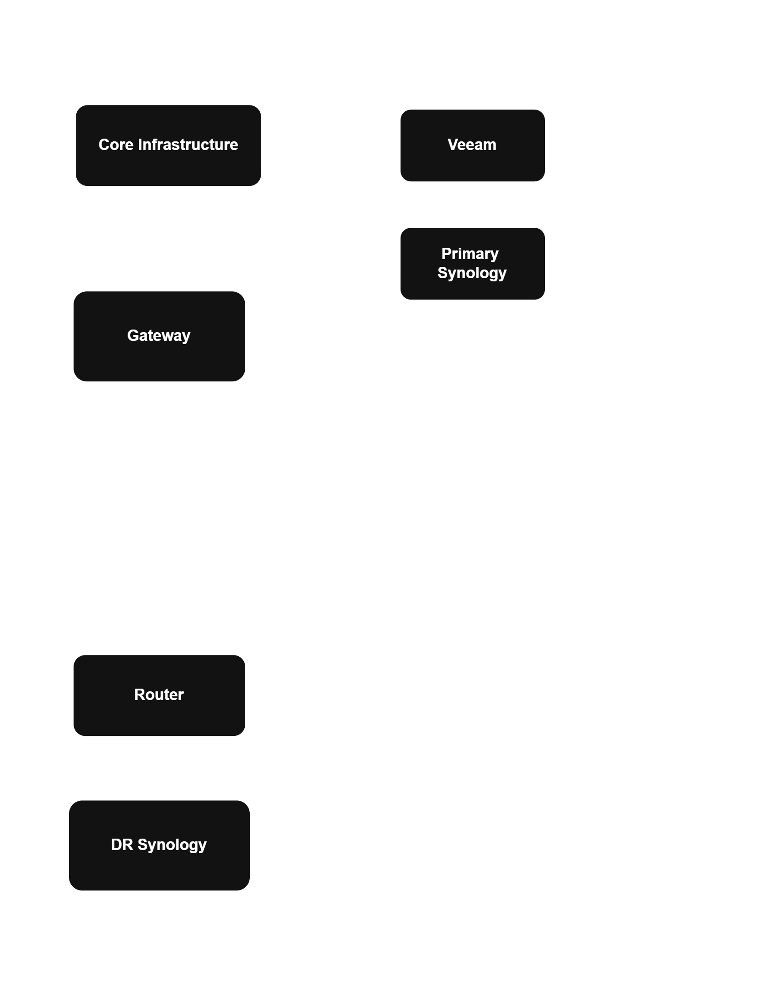

Disaster Recovery: Backup Infrastructure & Site-to-Site Connectivity

Overview
The administration office's servers and files are backed up locally using Veeam, with an incremental backup copy replicated to Synology storage at a separate disaster recovery site.
The existing backup setup had begun experiencing repeated failures. Troubleshooting showed that the network connectivity between the primary and DR sites also needed to be addressed, so the backup path and the underlying site-to-site connectivity were rebuilt.
The Problem
The existing backup jobs were failing repeatedly. Troubleshooting was complicated by the fact that the MikroTik router at the DR site had undocumented credentials from before our team took over management of the environment.
The router also served as the gateway for a sister company operating from the same location, making the situation more complex. Rather than attempting to work around an undocumented configuration, the decision was made to replace the router and rebuild the connectivity from the ground up.
My Role
The IT Manager led the Veeam configuration and overall implementation. I worked alongside him as a second technical resource, assisting with troubleshooting, testing, and validating the new environment.
My involvement included:
- Assisting with the deployment and configuration of the replacement MikroTik router at the DR site
- Supporting the establishment and testing of the fibre point-to-point link between the primary and DR sites
- Travelling to the DR site to perform connectivity tests from the secondary location
- Testing connectivity from the DR site back to the primary site and to the local Synology storage
- Assisting with troubleshooting when the DR Synology could not initially be reached from the primary site
- Helping validate the final connectivity arrangement after the initial bidirectional testing was simplified to the required primary-to-DR path
Troubleshooting Approach
Because the two sites were physically separated, troubleshooting required testing from both locations rather than relying solely on tests from the primary site.
When the DR Synology could not be reached from the primary site, I tested connectivity directly from the DR site. This helped narrow down whether the problem was within the DR site's local network, the router, the point-to-point link, or the Synology device itself.
This approach allowed us to troubleshoot the connectivity path systematically rather than assuming that every backup failure originated from Veeam.
Result
The rebuilt backup environment is now running reliably on its incremental schedule.
A recovery test was also completed successfully, confirming that the backup data could be restored and that the DR process worked beyond simply completing backup jobs.
What I Learned
This project reinforced the importance of troubleshooting across the entire infrastructure stack. A backup failure is not necessarily a backup-software problem; network connectivity, routing, and storage can all affect whether a backup can complete successfully.
It also gave me practical experience troubleshooting connectivity between two physical sites and understanding how network infrastructure, storage, and backup systems depend on one another in a disaster recovery environment.